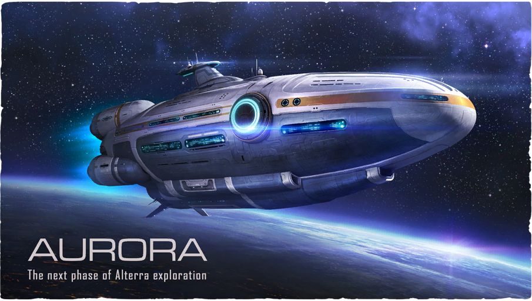

Alterra Long-Range Capital Ship

The Aurora is a spacecraft sent to the Ariadne Arm by the Alterra Corporation
in order to build a phasegate. However, its secondary mission, unknown to most
of the crew, was to search for and, possibly, rescue the survivors of the Degasi crew.
Aurora Auxiliary Mission Orders
Mission: Search & Rescue
Target: Crew of the Mongolian vessel 'Degasi'
Last known position: Vicinity of planet 4546B, Ariadne Arm
Contact: Mongolian Emissary Jochi Khasar, Aurora Passenger Quarters
During a gravity slingshot maneuver around Planet 4546B, the Aurora was struck by a mysterious energy pulse, resulting in catastrophic hull failure, leading to its crash landing on the surface of the planet. It is later revealed that it was the Quarantine Enforcement Platform that shot it down.
Many Lifepods were destroyed by the energy pulse and the ones that did launch were all compromised with the exception of two: Lifepod 5, which contained Ryley Robinson, and Lifepod 4, though its flotation devices seemingly failed or was possibly overturned by a Reaper Leviathan.